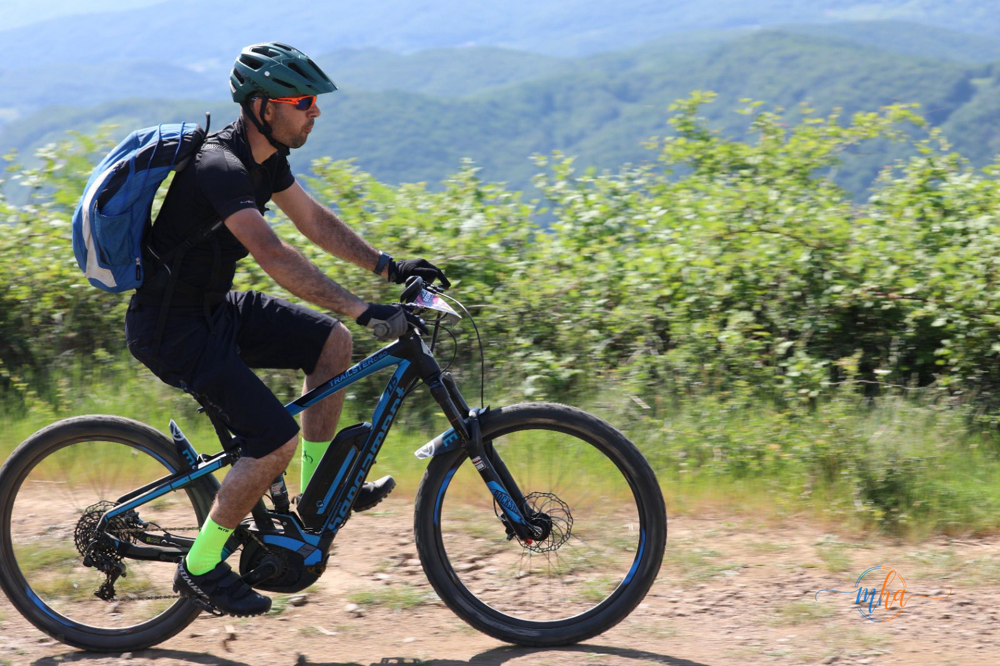
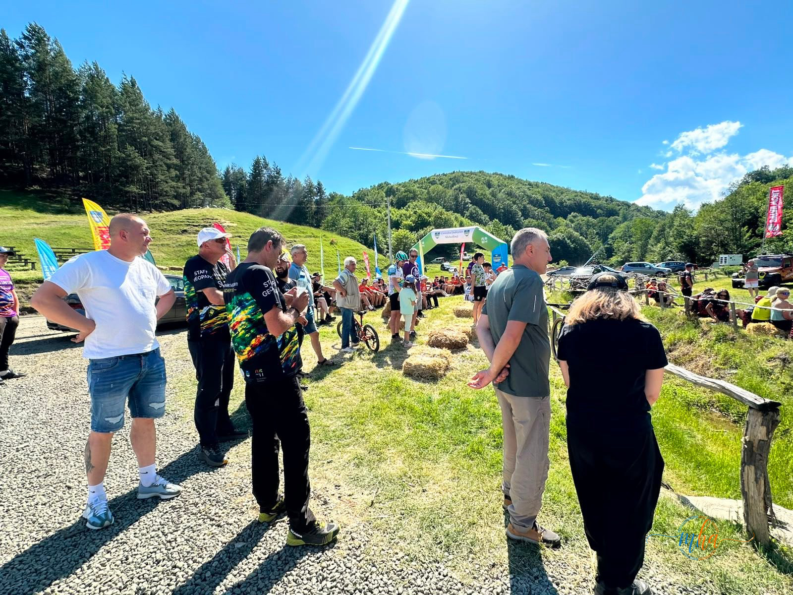
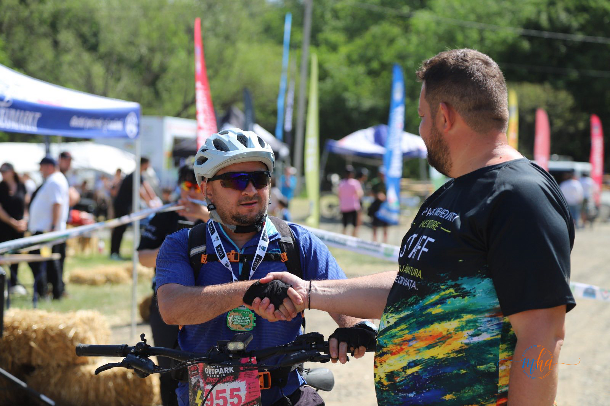
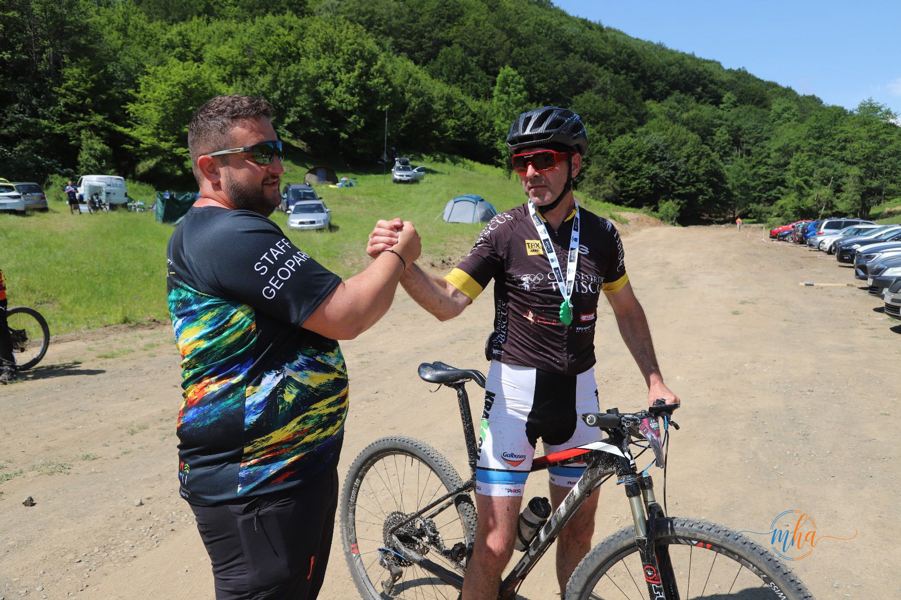

Baia de Aramă, mai 2026. Dacă vrei să înțelegi ce înseamnă Mehedințiul pentru cei care iubesc muntele, vino pe Platoul Mehedinți la sfârșitul lui mai. Trei zile în care pădurea, stâncile și traseele de munte devin scenă pentru una dintre cele mai frumoase competiții de sport de aventură din sudul României — Geopark Mehedinți Adventure, ajunsă în 2026 la cea de-a V-a ediție.
Reporterul MehedintiAzi.ro a urmărit festivitatea de premiere și a văzut cu ochii lui cum arată un eveniment reușit: sportivi obosiți dar zâmbitori, voluntari care nu s-au oprit trei zile, organizatori care și-au pus sufletul în fiecare detaliu și un public care a venit să susțină, nu doar să privească.
🏃 400 de sportivi pe traseele Geoparcului — cifre care vorbesc de la sine
Peste 400 de sportivi din întreaga țară au ales să-și testeze limitele pe traseele Geoparcului Platoul Mehedinți. Nu e o cifră mică pentru o competiție regională — e o confirmare că Geopark Mehedinți Adventure a devenit un brand în lumea sportului de aventură din România.
Alergătorii montani și bicicliștii MTB au parcurs trasee în mijlocul uneia dintre cele mai spectaculoase zone naturale din sud-vestul României. Fie că e vorba de crestele calcaroase, de peșterile Geoparcului sau de pădurile bătrâne de pe platou — fiecare metru de traseu a fost o lecție despre ce înseamnă cu adevărat acest colț de țară.

🌎 Trei zile în care Baia de Aramă s-a transformat
Timp de trei zile, Baia de Aramă nu a mai fost doar un orășel liniștit la poalele platoului. A devenit un hub de energie, sport și comunitate. Tabăra evenimentului a prins viață cu corturi, echipamente, muzică și zeci de conversații între oameni care nu se cunoșteau înainte, dar care împart aceeași pasiune.
Sportul a fost în centru, dar nu singurul ingredient. Voluntariatul — un pilon important al acestei ediții — a arătat că Geopark Mehedinți Adventure nu e doar despre competiție, ci și despre implicare și respect față de natură. Participanții au plecat acasă cu mai mult decât o medalie sau un tricou — au plecat cu amintiri și cu o legătură reală cu locul.


🏛️ Oamenii din spatele evenimentului — Claudiu Cenușe și echipa Geoparcului
Un eveniment de 400 de oameni nu se organizează singur. În spatele lui există o echipă care lucrează luni de zile — și care, în cele trei zile de concurs, nu doarme prea mult. Claudiu Cenușe, coordonatorul Direcției de Administrare a Geoparcului Platoul Mehedinți, și echipa sa au demonstrat că pot livra un eveniment de calitate, cu logistică impecabilă și un parcurs sigur pentru toți participanții.
Alături de ei, voluntarii au fost coloana vertebrală a organizării — prezenți pe trasee, la punctele de asistență, la festivitate. Fără ei, nimic nu ar fi funcționat la fel.
👥 Cine a făcut posibilă ediția V:
- Direcția de Administrare a Geoparcului Platoul Mehedinți — coordonator Claudiu Cenușe
- Consiliul Județean Mehedinți — partener instituțional principal
- Primăria Baia de Aramă — primar Ionuț Tudorescu, implicat activ în susținerea evenimentului
- Voluntari din Mehedinți și din județele participante
- Parteneri și sponsori ai ediției a V-a
🏆 Festivitatea de premiere — bucurie, oboseală și fair-play
La festivitatea de premiere, oboseala de pe fețele sportivilor se amesteca cu mândria. Câștigătorii au urcat pe podium, dar aplauzele le-au primit toți — inclusiv ultimul finisher. Asta e spiritul Geopark Mehedinți Adventure: contează să ajungi la capăt, nu doar să ajungi primul.

„Geopark Mehedinți Adventure este mai mult decât o competiție sportivă. Este un eveniment care promovează frumusețea județului nostru, respectul pentru natură și spiritul de echipă. Ne revedem la anul cu o ediție cel puțin la fel de frumoasă!"
🅳 Primarul Ionuț Tudorescu — Baia de Aramă, gazda perfectă
Un eveniment de 400 de sportivi înseamnă și sute de cazări, mese, deplasări, logistică locală. Baia de Aramă s-a ridicat la înălțimea așteptărilor — primarul Ionuț Tudorescu a fost prezent și implicat, asigurând sprijinul administrației locale pentru desfășurarea în condiții optime a competiției.
Ospitalitatea care definește aceste locuri a fost vizibilă la fiecare pas — participanții veniți din alte județe au plecat acasă cu o impresie bună nu doar despre trasee, ci și despre oamenii din Baia de Aramă.
🌿 De ce Geopark Mehedinți Adventure contează pentru județ
Fiecare ediție a acestui eveniment pune Mehedințiul pe harta sportului național de aventură. 400 de sportivi înseamnă 400 de oameni care au descoperit sau redescoperit Platoul Mehedinți, care au postat pe rețelele sociale, care au recomandat locul prietenilor. E o formă de promovare turistică pe care niciun pliant nu o poate înlocui.
Consiliul Județean Mehedinți, prin susținerea acestui eveniment, investește practic în imaginea județului — iar rezultatele se văd an de an, prin creșterea numărului de participanți și prin interesul tot mai mare față de Geoparcul Platoul Mehedinți ca destinație de turism activ.
Sursa: Consiliul Județean Mehedinți / Direcția Administrarea Geoparcului Platoul Mehedinți / Redacția MehedintiAzi.ro